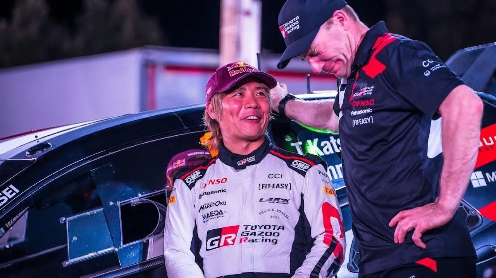
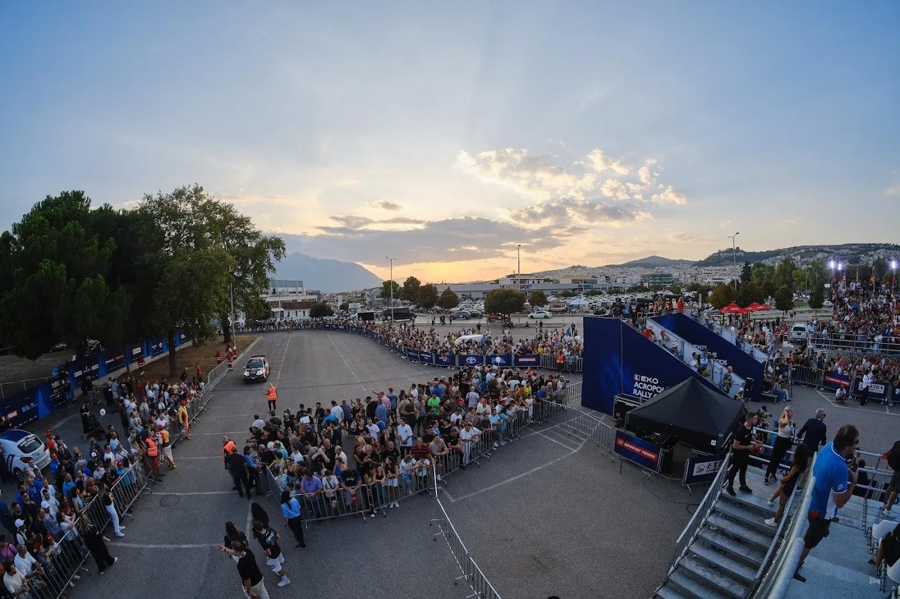
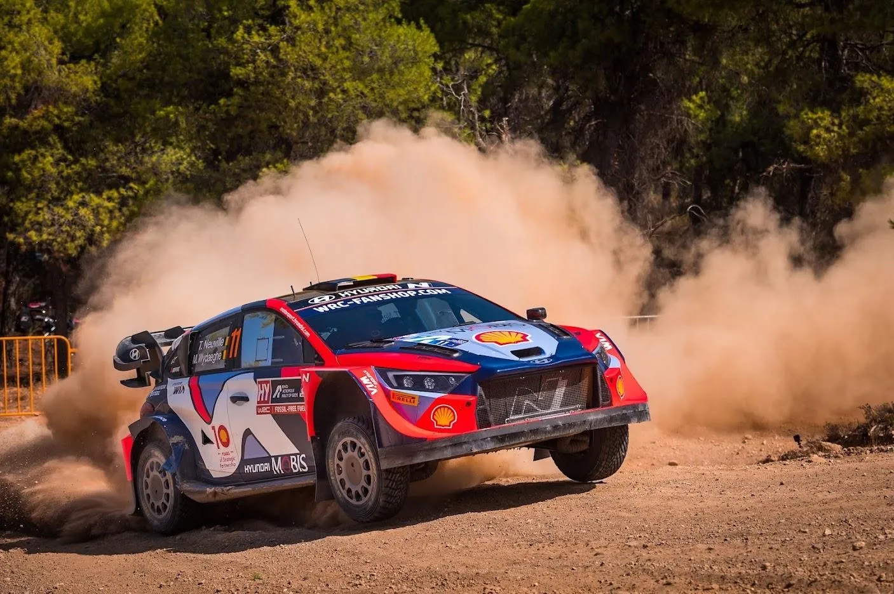
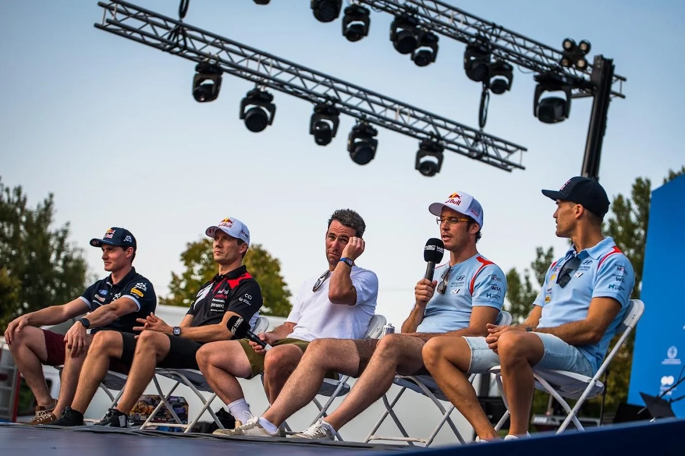
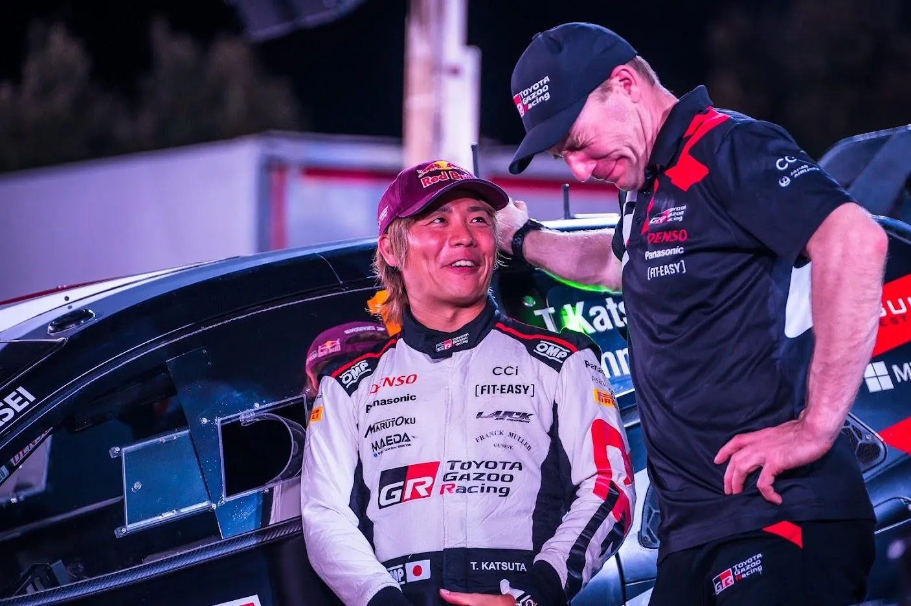
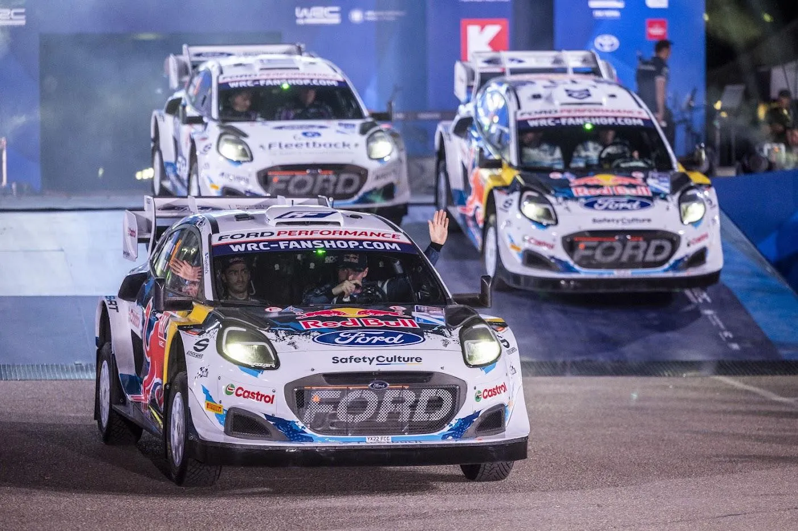
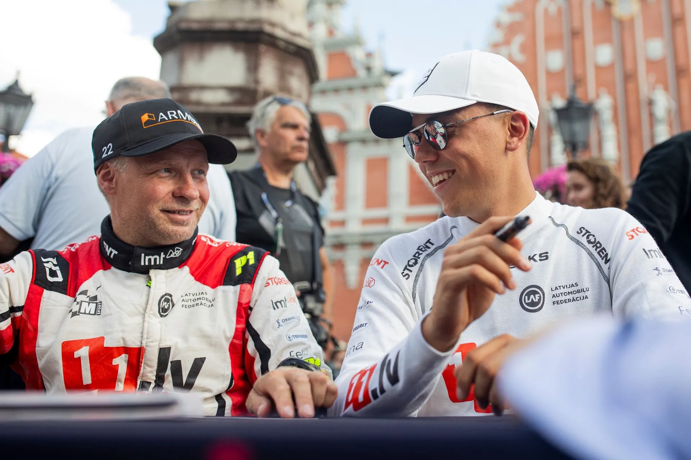

WRC Driver Market: What are the teams planning for 2025
As the sun sets on the 2024 WRC season, teams are starting to prepare for 2025, and as a result, we have several driver market news and rumours. With Hyundai, Toyota, and M-Sport all looking to secure their drivers, there's a lot of buzz about who’s staying, who’s moving, and who might be left without a seat.

Acropolis Rally website
Hyundai: Tänak and Neuville confirmed, but what about the third seat?
Hyundai have confirmed that their two star drivers will still be part of the team for 2025, with the Alzenau based team announcing during the Acropolis Rally that Thierry Neuville will continue onboard for 2025 as well. The future of the team beyond 2025 is unknown, as Hyundai will join the World Endurance Championship in 2026, and rumours are talking about the South Korean manufacturer scaling back their WRC effort in 2026, with 2027 being an unknown for as long as the new rules remain unpublished. With Tänak and Neuville confirmed, the third seat is set to be highly sought after. Hyundai team boss Cyril Abiteboul has recently hinted that the team might look for a full-time entry for their third car for 2025, meaning a change of approach for the first time since 2018. If Hyundai were to go down that path, Adrien Fourmaux could be the top candidate for the 3rd i20 Rally1. Hyundai tried to poach the Frenchman away from M-Sport last year, offering him essentially what would be Mikkelsen's part-time deal. Thankfully for the Frenchman, his decision to stay at Cumbria has worked wonders, with Fourmaux being the revelation of the season, currently sitting in 5th place on the Driver's standings, very close to Elfyn Evans. But would a third seat for a manufacturer who's yet to confirm their plans beyond next season be a wise move for Fourmaux? That remains to be seen, as the Frenchman remains tight-lipped about his plans for 2025.

Acropolis Rally website
Fourmaux’s potential move leaves a trio of drivers currently employed by Hyundai in limbo: Esapekka Lappi, Andreas Mikkelsen, and Dani Sordo. Esapekka Lappi won in Sweden but has failed to show good pace in the following rounds. Mechanical issues plagued his Safari Rally outing, and his performances in Latvia and Finland were subpar. With the Finn stating that he will only sign a part time deal if offered to him, it seems difficult to see him remain at Hyundai unless they keep the rotating drivers for 2025. Andreas Mikkelsen has also failed to show great pace in the i20 Rally1 in the role he was hired for. The Norwegian's pace on tarmac has been disappointing, and it's still surprising that Hyundai hired him for the "tarmac master" role. A good outing in Poland was interrupted after he got a puncture, but Mikkelsen showed that he still has pace if he is given a rally where he is actually good in. Whereas for Dani Sordo, it's been business as usual. Sordo has been very reliable in the three outings he's had, with a podium in Acropolis being his best performance of the season. The Spaniard is executing the role Hyundai has given him to perfection. But he would most likely be leaving the team if Hyundai decided to have a third driver full-time.

Acropolis Rally website
Toyota: Rovanperä returns full-time, Sami Pajari could be one for the future
Toyota is more than likely to still employ all of its current drivers next season, but with the caveat that almost all will have different roles within the team. Kalle Rovanperä is set to return to a full-time campaign in 2025, which will be a big relief for Toyota, as the Japanese manufacturer has suffered this season, currently trailing Hyundai by 35 points. Team Principal Jari-Matti Latvala stated after the Acropolis Rally that the team would be looking for three full-time entries for 2025. But what's more likely is that Toyota will be having 3 full time entries, with a 4th car also participating in some events, if not all. Sebastien Ogier has said many times that he will not compete in the WRC full time again, and it seems like he and Toyota will continue their partnership for as long as each party is satisfied with each other's work. Despite a rather disappointing 2024 season, Elfyn Evans is also more than likely to continue with Toyota at least for 2025. This now leaves us with two drivers, Takamoto Katsuta and Sami Pajari. The Japanese driver was recently benched by the team for Rally Chile in favour of Pajari, who will drive the 4th car in Chile and CER. Is this perhaps a sign for Katsuta? To me, it's unlikely that Taka won't be in a Yaris Rally1 next season, as Toyota need a Japanese driver in the car. What I think could happen, is that Sami Pajari will compete in the 4th car in the events Ogier doesn't compete in for 2025, with Taka being the 3rd car in the events that Pajari does. It seems improbable that Sami Pajari won't be in a Yaris Rally1 next season, given that Toyota are set to enter him in 3 events this year already. It's also a great way to have a talent evaluated for the future of the team.

Acropolis Rally website
M-Sport: Fourmaux's decision is pivotal, Munster likely safe, what about Sesks?
M-Sport’s 2025 lineup largely hinges on what happens with Adrien Fourmaux. The Frenchman has been a big part of the team’s recent efforts, with the Frenchman scoring 4 podiums this year so far, but if Hyundai swoops in for him, M-Sport will need to reshuffle. Fourmaux’s departure would leave a big hole in the M-Sport lineup, and it would weaken them significantly. Were Fourmaux to leave, the Dovenby Hall team could be forced to look at Hyundai's "rejects" for a replacement. The team tried to sign Andreas Mikkelsen and Teemu Suninen last year, but ultimately failed, having to settle for Fourmaux and Munster. With the Puma Rally1 proving to be more reliable this year, and not as slow as feared, M-Sport could be more likely to sign someone like that for next season if Fourmaux leaves, provided they're willing to pay them. Gregoire Munster seems set to stay at M-Sport for next year, with his seat secured for as long as he doesn't cause too much damage to his Ford Puma Rally1, and as long as Serderidis remains a backer. This leaves us with one big question, what about Martins Sesks?

Acropolis Rally website
Sesks impressed everyone on his two Rally1 outings in Poland and Latvia earlier this year, so much so that he has secured a third outing in Chile. M-Sport giving the young Latvian another shot at a Rally1 is surely an indication that the team is considering him for 2025, and I am guessing his involvement within the team will ultimately be decided by his performance in Chile, a rally that he has not competed in before. A full-time programme for Sesks would be too early for him, as he hasn't competed in most events in the WRC calendar with 4WD machinery, so the Latvian would be thrown in the deep end. A partial campaign, with some rallies with the Puma Rally1 and some others in the Fiesta Rally2, would be a great way to evaluate Sesks' potential in more than just his favourite rallies, and also a way for M-Sport to revive its WRC2 programme, as JWRC Championship Winner Romet Jürgenson is also set to compete in the championship full-time, with help from the Rally Star programme. Sesks programme will also depend on the amount of money he can bring to the team. Apart from full-time drivers, the team is also more than likely to keep renting to privateers for one off events, or promoting talents alongside with the WRC Promoter, with names like Robert Virves, Jose Antonio Suarez and Giorgos Vasilakis all rumoured to be interested in competing in events with a Rally1 car next season, the former two with the help of the promoter on their home rallies.

Arturs Pavlovs / Red Bull Content Pool

Comments